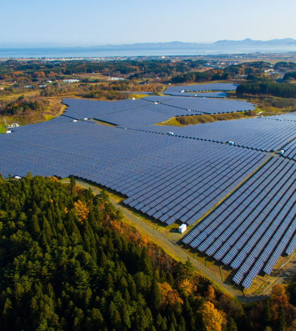

УСЛУГИ

Полный комплект солнечной электростанции
74 модели солнечных панелей, 31 модель инверторов, провода с повышенной устойчивостью к атмосферным условиям, качественные соединители, контроллеры зарядов и надежные гелевые аккумуляторы с увеличенным сроком службы.
Подбор оборудования с максимальной производительностью
Подбираем солнечные панели с учетом расположения Вашего дома, количеством прямого и рассеянного излучения, для того, чтобы Ваша электростанция - вырабатывала максимальное количество электроэнергии и окупилась как можно быстрее.
Монтаж оборудования в соответствии с ГОСТом
Монтаж производится в точном соответствии с ГОСТом, с учетом закона о «Зеленом тарифе» и требованиями Облэнерго. При этом, мы учитываем, чтобы солнечная станция имела максимально возможную производительность.
Помощь в подключении к «Зеленому тарифу»
Всю бюрократическую процедуру по подключению Вашей электростанции к «Зеленому тарифу», мы берем на себя, в том числе по увеличению договорной мощности вашего дома. При заказе солнечной электростанции эта услуга абсолютно бесплатна.